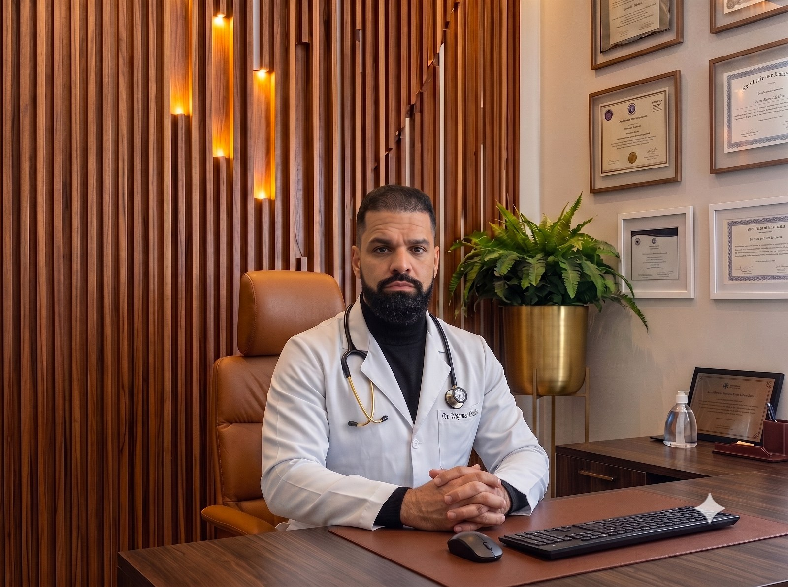
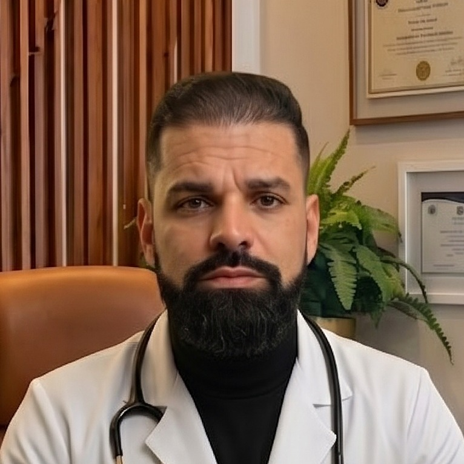

Dr. Wagner Novaes Jr.
CRM-RJ 0127554-2
Medicina Funcional & Longevidade — cuidado individualizado, da causa à prevenção.
Agendar consulta
WhatsApp · secretária 24h
📅
Agendar direto no calendário
escolha o horário na hora
Atendimento presencial em São Paulo e Angra dos Reis · e online
Sobre
Médico com pós-graduação em Psiquiatria e Nutrologia, dedicado à medicina funcional e integrativa. Meu trabalho é cuidar da pessoa por inteiro — unindo saúde mental, metabolismo e hormônios — para tratar a causa, e não apenas o sintoma.
Cada plano é individualizado, construído com base em avaliação clínica, exames e mudança de estilo de vida, com foco em prevenção e longevidade.
Áreas de atuação
🔥Emagrecimento Metabólico
🧠Ansiedade & Depressão
🧩Autismo & Neurodesenvolvimento
⚕️Reposição Hormonal
🌱Saúde Intestinal (Disbiose)
⚡Performance Mental
Formação & Cursos
- Pós-graduação em Psiquiatria & NutrologiaUniBF
- Pós-graduação em Adequação NutricionalCoordenação Dr. Lair Ribeiro · reconhecida pelo MEC · 360h
- Saúde Mental Integrativa e FuncionalFormação continuada
Congressos & Atualização


Acompanhe